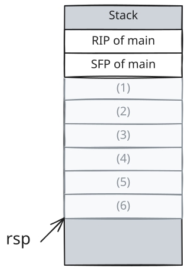
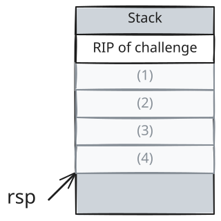

Homework 2
Due Date: Wednesday, 10/28/2026, 11:59 PM
Late Submission Deadline: Wednesday, 11/11/2026, 11:59 PM
Instructions
-
You may work together with other students on this assignment. You must list the names and
stevens.eduaddresses of anyone you work with. You are still responsible for writing your own solutions and submitting this assignment individually -
All external sources used to assist in answering questions must be cited using IEEE-style citations.
-
The use of LLM-based tools on this assignment is limited.
-
You may not use AI to generate your solutions. If you are found to be doing so, you will receive a 0 on the assignment and be inelligible for extra credit opportunities.
-
The use of AI for conducting research, error/spell-checking, ideation, and other applications that are not detrimental to learning objectives is allowed; you must cite the model(s) used, (e.g. gpt5.6-sol) and how it was used (e.g. research on <topic>, spell/grammar checking)
-
-
Unless otherwise stated, any assignment involving programming may be completed in any programming language of your choice. If asked, you should be able to explain the details of your source code (e.g. program design and implementation decisions).
-
A PDF of your solutions, along with any source code files written are to be uploaded to Gradescope.
Submission Format
-
The first page of your submission must contain only the following contents:
hw: <#> name: <name> email: <email> collaborators: - <name1> (<email1>) - <name2> (<email2>) - <...> ai: - <model>: <usage1>, <usage2>, <...> - <...> pledge: I pledge on my honor that I have abided by the Stevens Honor System. -
Solutions to each problem should start on their own page (subparts can continue on the same page).
-
See this google doc for an example.
Problems
(25 points) Robust Refactor
In this problem, you will be refactoring the qlib library that we looked at in class.
The source files can be found in this zip file:
fqlib: “Fragile Queue Library” contains a functional but fragile queue library implementation (reference only).qlib: “Queue Library” contains a robust implementation of an integer queue library to be refactored.
-
(25 points) Complete Exercise 16 from the Robust Programming reading:
You should base your code on the
qlibimplementation in therobust.zipfiles, but that is not guaranteed to be free of issues.-
Report what changes you made to the library and why, noting any new sanity and consistency checks you needed to make in particular.
-
Include your header and source files in your PDF submission, with the names
dqlib.handdqlib.c, respectively. -
Bonus (2pts): What is wrong with the
qlibimplementation as provided?
-
(25 points) Bypassing Memory Safety Features
Consider the following code snippet:
void foo(void) {
char foobuf[256];
fgets(foobuf, 257, stdin);
}
void bar(void) {
foo();
}
void main(void) {
char * buf = (char *) malloc(128);
fgets(buf, 128, stdin);
printf("%p", buf);
bar();
}Assume the following:
- ASLR is enabled.
- All other memory safety features disabled.
- Assume ASLR will always randomize the value of the saved base pointer of
footo have a LSB in the inclusive range0x20 - 0xf8. - You can represent the output of
printfon line 13 with a variableADDRESS. This is an 8-byte, little-endian byte string. - You can represent shellcode with a variable
SHELLCODE, which has a maximum length of 120 bytes. - Note: SFP = saved frame pointer = saved base pointer (rbp)
-
(6 points) Assume the program is paused at line 3 (before
fgetsis called).
Complete the following stack diagram:
Figure 1: Stack state at line 3
-
(8 points) Provide the byte string inputs to
fgetson line 12 andfgetson line 3 that will lead to shellcode execution.You can craft these inputs using Python syntax. For example:
>>> b'\x31' * 8 + b'\x0b\xad\xc0\xde' b'11111111\x0b\xad\xc0\xde' >>> ADDR = b'\x00\x00\x7f\xff\xff\xff\x80\x80' >>> ADDR + b'\xc0\xde' b'\x00\x00\x7f\xff\xff\xff\x80\x80\x00\xc0\xde'
-
(11 points) Explain why this exploit is only guaranteed to work if the saved base pointer of
foohas a LSB in the range0x20 - 0xf8.
(25 points) No Overflow?
Consider the following CTF challenge:
void challenge(void) {
int8_t size;
char flag[16];
char buf[128];
// implementation not shown
load_flag(flag);
memset(buf, 0, 128);
fread(&size, 1, 1, stdin);
if (size >= 128) {
return;
}
fread(buf, size, 1, stdin);
printf("%s", buf);
}The load_flag function loads the flag data from an access-controlled file on the system.
-
(5 points) Assume the program is paused at line 8.
Complete the following stack diagram:
Figure 2: Stack state at line 8
-
(5 points) Provide the byte string inputs to
freadon line 11 andfreadon line 17 that will give you the flag.
-
(5 points) Explain how your solution to the previous part works.
-
(5 points) Provide the byte string inputs to
freadon line 11 andfreadon line 17 that would allow you to execute the largest possible shellcode payload.Assume all memory safety features are disabled and the compiler allocates 8 bytes of space for
size.- Use a variable named
SHELLCODEthat contains the shellcode payload as a byte string. - Use a variable named
BUF_ADDRESSthat contains the address ofbufas a byte string (presumably reverse-engineered withgdb). - You must specify the length of
SHELLCODE.
- Use a variable named
-
(5 points) Explain how your solution to the previous part works.
(25 points) Python has Problems Too
Just because we’ve been mostly looking at problems in C doesn’t mean other languages don’t have their own problems.
A well-known dangerous implement in Python (aside from the use of the eval function) is the pickle library.
The pickle library is Python’s native module for serializing and deserializing its objects, which can be quite useful for caching purposes.
Per the documentation, however, unpickling an object may also involve executing arbitrary code. You’ll be crafting a pickle-based attack in this problem and creating a short vulnerability report and description of your exploit.
-
(15 points) Complete the Pickle Rick challenge in the hw2 module (originally part of the Hanto Dojo).
- Hint 1: Find out how pickle exploits work (Google it), then read the
pickle-rick.pysource code to find out how the pickled data is given to the program. - Hint 2: Your goal is still to read
/flag.
- Hint 1: Find out how pickle exploits work (Google it), then read the
-
(10 points) Describe the vulnerability in the
pickle-rick.pyscript and the steps you took to exploit it.Refer to the “Vulnerability Description” section here and the “Real World Demonstration” section here for good examples of what we are looking for:
- point out the affected code
- what input the attacker controls
- describe the steps taken to reproduce the exploit